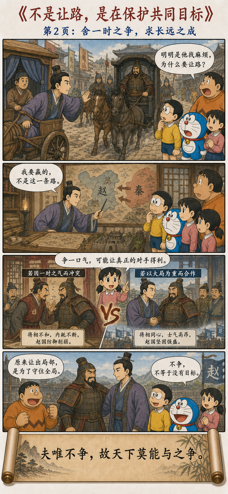
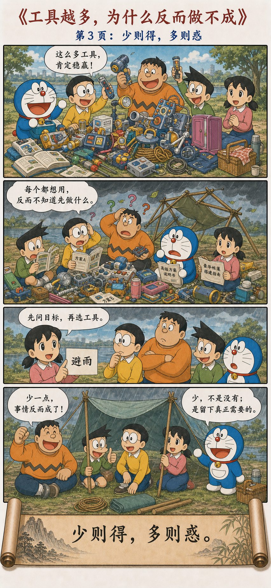

六个悖论，指向一种更完整的选择
Six Paradoxes Point Toward a More Complete Choice
曲则全，枉则直，
洼则盈，敝则新，
少则得，多则惑。
是以圣人抱一为天下式。
不自见故明，不自是故彰，
不自伐故有功，不自矜故长。
夫唯不争，故天下莫能与之争。
古之所谓“曲则全”者，岂虚言哉！
诚全而归之。
Yield and remain whole; bend and become straight. Be low and become full; be worn and become renewed. Take less and truly gain; take more and become confused. Therefore the sage holds to the One and becomes a model for all under heaven. Not displaying himself, he is seen clearly; not insisting that he is right, he becomes distinguished; not boasting, he has achievement; not exalting himself, he endures. Because he does not contend, no one under heaven can contend with him. The ancient saying “yield and remain whole” is no empty phrase: true wholeness returns to such a person.
不是每一个局部都必须赢
Not Every Local Contest Must Be Won
懂得调整，反而能够保全；暂时处在低处，才有容纳新东西的空间；减少不必要的占有，反而更容易得到真正需要的；什么都想抓住，最后可能连方向也看不清。
The ability to adjust can preserve what matters. A lower position can create room to receive. Reducing unnecessary possession can make what is truly needed easier to gain, while trying to hold everything may obscure direction itself.
因此，真正成熟的人不急着在每个场合证明自己，不把每次分歧都变成输赢，也不把公共成果全部写成个人功劳。他清楚自己要保护什么，于是能够放下那些与目标无关的小胜负。
A mature person therefore does not prove himself in every setting, turn every disagreement into victory and defeat, or convert shared results into private credit. Knowing what must be protected allows him to release small victories unrelated to the goal.
放弃一次小赢，也可能是在保护全局
Giving Up One Small Win May Protect the Whole
一个人在每一个局部都坚持赢，最后未必得到最好的整体结果。赢了一场争吵，可能毁掉一段重要合作；保住一次面子，可能失去未来的机会；抢到眼前的功劳，也可能让团队从此不再信任自己。
A person who insists on winning every local contest may not achieve the best overall result. Winning an argument can destroy an important partnership; saving face can close a future opportunity; seizing immediate credit can cause a team to withdraw its trust.
用现代语言说，“曲则全”很像在提醒我们：不要把每一个局部最优，当成真正的全局最优。局部的得分只有放进更长的时间和更大的目标里，才知道它究竟是赢，还是一种昂贵的偏离。
In modern language, “yield and remain whole” warns us not to confuse every local optimum with the global optimum. A local gain can be judged only within a longer horizon and a larger objective; what looks like victory may be an expensive deviation.
不是因为输不起才不争，
而是因为知道什么值得赢。
One does not decline to contend from fear of losing, but from knowing what is worth winning.
“曲”不是委屈自己，而是改变路径
Yielding Is Not Self-Denial; It Is a Change of Path
这里最需要避免的，是把“曲则全”讲成苦情故事：我不断受委屈、不断忍耐，所以我很伟大。这样的理解会把主动判断变成被动承受，也很容易被人拿来要求弱者为所谓的大局牺牲。
The greatest danger is turning “yield and remain whole” into a tale of suffering: I endure injury again and again, therefore I am virtuous. That interpretation converts active judgment into passive endurance and can be used to demand that the vulnerable sacrifice themselves for someone else’s supposed greater good.
真正的“曲”，是一个仍然拥有选择能力的人，主动改变路线、调整节奏，或者拒绝参加一场低价值的比赛。放弃的是次要的东西，保全的是自己真正认可的长远目标。
True yielding belongs to someone who still has agency: changing route, adjusting pace, or refusing a low-value game. What is released is secondary; what is preserved is a long-term objective the person genuinely accepts.
不接战、让一条路，以及只留下真正需要的
Refusing a Fight, Yielding a Road, and Keeping Only What Matters



不接这一场没有价值的战斗
Refusing a Fight That Has No Value
《史记》记载，韩信年轻时受到市井少年的挑衅：要么拔剑杀人，要么从对方胯下过去。挑衅者把世界压缩成了两个选择——杀人证明勇敢，退让承认胆怯。
The Records of the Grand Historian tells how the young Han Xin was challenged by a local tough: either draw his sword and kill, or pass beneath the man. The challenger compressed the world into two options—kill to prove courage, or yield and admit cowardice.
韩信真正厉害的地方，不只是能够忍，而是没有接受对方规定的游戏。如果拔剑，他可能赢得围观者一时的喝彩，却会杀人获罪，让整个人生被一场毫无价值的冲突截断。他放弃的是一时面子，保住的是还没有展开的未来。
Han Xin’s strength lies not merely in endurance, but in refusing the game defined for him. Drawing the sword might win a moment of applause, yet a killing and punishment could cut off his entire future. He released momentary face and preserved a life that had not yet unfolded.
后来韩信成为楚王，召来当年羞辱他的少年，并没有报复，反而任命他为中尉。他对将相说，当时并非不能杀，而是杀了也没有意义。这不是苦情，而是一种非常冷静的目标排序。
After becoming King of Chu, Han Xin summoned the man who had humiliated him. Rather than taking revenge, he appointed him to office. He explained that he could have killed the man then, but such a killing would have achieved nothing. This is not a tragedy of suffering, but a cool ordering of objectives.
不参加，不等于失败
Not Participating Is Not the Same as Losing
很多冲突会先偷偷规定胜负标准：谁声音大谁赢，谁先退谁输，谁不立刻反击谁就软弱。一旦接受这个标准，我们便只能在别人画好的棋盘上行动。
Many conflicts quietly define their own standard of victory: the louder voice wins, the first to step back loses, and anyone who does not retaliate at once is weak. Once that standard is accepted, we can move only on a board drawn by someone else.
“曲则全”给出的第三个选项是：先问这场比赛是否值得参加。拒绝一场代价高、收益低、与目标无关的较量，并不是把胜利送给对方，而是不让对方决定我们的资源应该花在哪里。
“Yield and remain whole” offers a third option: ask whether the contest is worth entering. Declining a costly, low-return struggle unrelated to the goal does not hand victory to the other side. It refuses to let them decide where our resources should be spent.
不是让路，是在保护共同目标
He Was Not Merely Yielding the Road; He Was Protecting a Shared Objective
蔺相如立功以后，职位排在廉颇之上。廉颇很不服气，扬言见面便要羞辱他。蔺相如却称病不上朝，在路上遇到廉颇的车驾，也主动让开。
After Lin Xiangru’s diplomatic achievements, his rank rose above that of General Lian Po. Lian Po resented this and threatened to humiliate him. Lin avoided court and yielded when their carriages met on the road.
门客以为他害怕，蔺相如却指出：强秦不敢轻易攻赵，是因为赵国同时拥有廉颇和蔺相如。如果两位重臣为了个人高低公开争斗，真正获利的将是秦国。他说自己这样做，是“先国家之急而后私仇”。
His retainers assumed fear, but Lin explained that Qin hesitated to attack because Zhao possessed both Lian Po and Lin Xiangru. If the two leading ministers fought over personal rank, Qin would be the real beneficiary. He placed the state’s urgent need before a private grievance.
所以，他让出的不是原则，而是一条街上的先后；保全的不是自己的好名声，而是赵国不能失去的合作。廉颇后来负荆请罪，两个人共同守住的，远比谁的车先过去更重要。
He did not surrender principle, only precedence on one street. What he preserved was not his reputation but a partnership Zhao could not afford to lose. Lian Po later apologized, and what they protected together mattered far more than whose carriage passed first.
有时真正的对手，正在等待我们内斗
Sometimes the Real Opponent Is Waiting for Us to Fight Each Other
两个人争一口气时，注意力会被眼前的冒犯占满，很容易忘记双方是否还有共同利益。团队、组织乃至国家中的许多冲突，都不只有“我”和“你”，还存在一个会被内耗影响的整体。
When two people fight over pride, immediate offense can fill the entire field of attention and hide their common interests. Many conflicts in teams, organizations, and states contain more than “you” and “me”; there is also a whole that internal exhaustion may damage.
但“大局”不能只由权力更大的人定义。真正的共同目标必须能够被双方说明、检验和认可。否则，所谓顾全大局，很可能只是要求某一方永远退让。
Yet the “greater good” cannot be defined solely by the more powerful party. A genuine shared objective must be explainable, testable, and acceptable to those involved. Otherwise, protecting the whole becomes an excuse to demand that one side always yield.
选择越多，为什么反而做不成事情
Why More Choices Can Make Completion Harder
大雄、胖虎和小夫面对一场小雨，却从口袋里搬出几十件道具：每件都很厉害，每件都配着不同说明，每个人也都想试自己的方案。工具越来越多，注意力却被选择和协调消耗，真正需要的避雨棚反而迟迟没有完成。
Facing a little rain, Nobita, Gian, and Suneo pull dozens of gadgets from the pocket. Every tool is impressive, each has different instructions, and everyone wants to try a separate plan. As tools multiply, attention is consumed by choice and coordination, while the needed shelter remains unfinished.
静香把问题重新写成两个字：“避雨”。目标一旦清楚，绳子、防水布和几根支柱便已经足够。“少”不是贫乏，也不是拒绝工具，而是让资源重新围绕目标排列。
Shizuka rewrites the problem in two words: “stay dry.” Once the objective is clear, rope, a tarp, and a few poles are enough. “Less” is neither poverty nor rejection of tools; it is the realignment of resources around the goal.
不抢功劳，不代表自己的贡献会消失
Not Seizing Credit Does Not Erase Contribution
班级共同完成一个项目，有人忙着在每张成果上留下自己的名字，有人则持续补漏洞、整理信息、帮助同伴。前者可能得到一时的注意，后者却让整个项目真正成立。
In a class project, one person rushes to place a name on every result while another keeps repairing gaps, organizing information, and helping teammates. The first may gain immediate attention; the second makes the project actually work.
“不自伐故有功”不是要求有贡献的人永远隐身，更不是让别人夺走劳动成果。它反对的是把公共成果变成个人权力：反复证明“没有我就不行”，最后让所有人都失去继续合作的愿望。
“Not boasting, one has achievement” does not require contributors to remain invisible or let others steal their work. It resists turning shared results into private power—repeating “nothing works without me” until everyone loses the desire to cooperate.
能够调整姿态，才有机会继续生长
The Ability to Adjust Preserves the Chance to Keep Growing
枯枝看起来坚硬，却只能维持一种姿态；风超过承受范围，它便折断。竹子会随风调整，风停以后仍然能够继续生长。这里重要的不是“弯”本身，而是系统能否在压力中保留恢复能力。
A dry branch appears hard but can hold only one posture; once the wind exceeds its tolerance, it breaks. Bamboo adjusts with the wind and continues growing after it passes. What matters is not bending itself, but whether a system preserves the ability to recover under pressure.
人也一样。承认计划需要修改、暂时放慢速度、换一种合作方式，都不必被理解成失败。真正危险的，常常是为了证明自己始终正确，把所有回旋和修正的通道全部堵死。
The same applies to people. Revising a plan, slowing temporarily, or changing a mode of cooperation need not mean failure. The greater danger is blocking every route of adjustment merely to prove that one was always right.
长远目标，不能成为要求别人牺牲的借口
A Long-Term Goal Must Not Become an Excuse to Sacrifice Others
为了更长远的目标放弃小利益，前提是目标由自己认可，选择出于主动，代价没有破坏基本尊严与安全，而且退让确实能够改善整体结果。如果伤害持续发生、边界不断被侵犯，仅仅忍耐并不会自动产生全局最优。
Giving up a small interest for a longer goal makes sense only when the goal is genuinely accepted, the choice remains voluntary, basic dignity and safety are protected, and yielding can improve the overall result. When harm continues and boundaries are repeatedly violated, endurance alone does not produce a global optimum.
有些时刻，真正服务于全局的行动恰恰是拒绝、退出或明确设立边界。“曲则全”要求的是分辨主次，而不是把“不争”机械地应用到所有关系。
At times, the action that truly serves the whole is refusal, withdrawal, or a clearly stated boundary. “Yield and remain whole” asks us to distinguish priorities, not to apply non-contention mechanically to every relationship.
放弃局部之前，先问四个问题
Ask Four Questions Before Releasing a Local Gain
知道什么值得保全，才知道什么可以放下
Knowing What Must Be Preserved Reveals What Can Be Released
韩信不接一场会毁掉未来的战斗，蔺相如让开一条不值得争的道路，静香从几十件工具中重新找回“避雨”这个目标。他们共同做的，不是委屈自己，而是拒绝让局部噪声接管整体方向。
Han Xin refuses a fight that could destroy his future; Lin Xiangru yields a road not worth contesting; Shizuka recovers the goal of staying dry from dozens of distracting tools. None is indulging in self-denial. Each refuses to let local noise seize the overall direction.
不必赢下每一个瞬间，
但要知道自己最终想完成什么。
You need not win every moment, but you must know what you ultimately intend to accomplish.
原典与故事出处
Primary Text and Story Sources
The Wang Bi edition and commentary on the Daodejing, and the Chinese Text Project edition of the text.
“The Biography of the Marquis of Huaiyin” and “The Biographies of Lian Po and Lin Xiangru” in the Records of the Grand Historian.